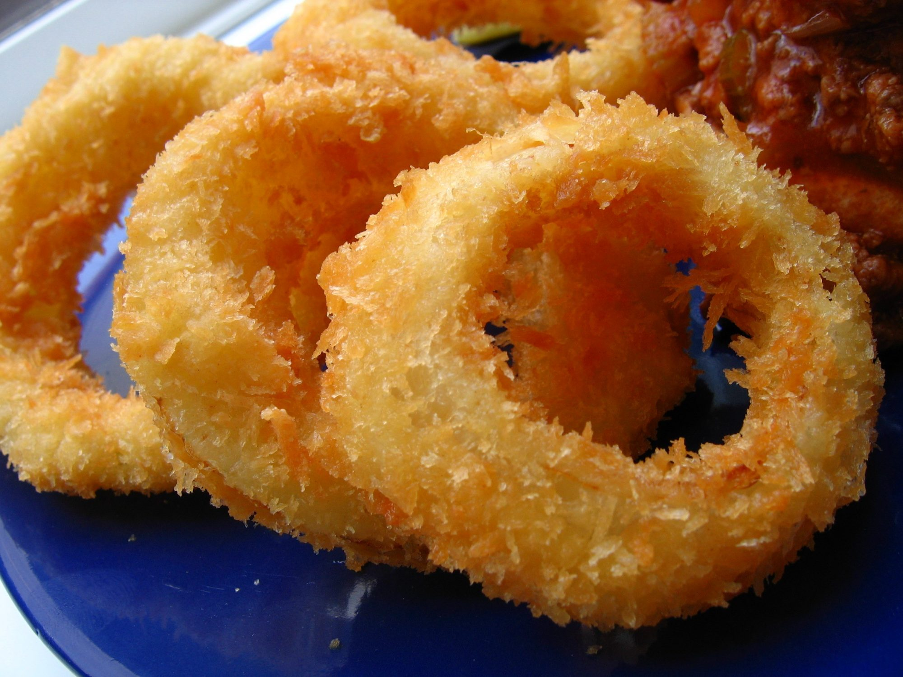

onion rings
This is an actual recipe from a former employee of a popular drive-in restaurant. Crispy coated onion rings like the pro's make!
Ingredients
- 1 large onion, cut into 1/4-inch slices
- 1 ¼ cups all-purpose flour
- 1 teaspoon baking powder
- 1 teaspoon salt
- 1 egg
- 1 cup milk, or as needed
- ¾ cup dry bread crumbs
- seasoned salt to taste
- 1 quart oil for frying, or as needed
Steps
- Heat the oil in a deep-fryer to 365 degrees F (185 degrees C).
- Separate the onion slices into rings, and set aside. In a small bowl, stir together the flour, baking powder and salt.
- Dip the onion slices into the flour mixture until they are all coated; set aside. Whisk the egg and milk into the flour mixture using a fork. Dip the floured rings into the batter to coat, then place on a wire rack to drain until the batter stops dripping. The wire rack may be placed over a sheet of aluminum foil for easier clean up. Spread the bread crumbs out on a plate or shallow dish. Place rings one at a time into the crumbs, and scoop the crumbs up over the ring to coat. Give it a hard tap as you remove it from the crumbs. The coating should cling very well. Repeat with remaining rings.
- Deep fry the rings a few at a time for 2 to 3 minutes, or until golden brown. Remove to paper towels to drain. Season with seasoning salt, and serve.